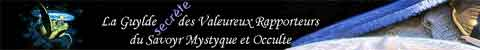
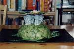
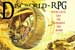
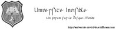

| Sites sur le Disque-Monde | |
 |
Le site francophone non officiel de Terry Pratchett Un site en français et en anglais qui de plus est sans doute un site français le plus complet sur ce chef d'oeuvre qu'est le Disque-Monde. |
|
Discworld Artwork by Paul Kidby - PJSM Prints Le site évidemment magnifique de Paul Kidby, deuxième dessinateur du Disque-Monde et plus grosse source d'illustrations du site de votre serviteur. |
|
|
Un tout nouveau site sur Le Disque-Monde. Très graphique avec une super vidéo d'intro. Vous y trouverez aussi un "Jeux de rôle maison". |
|
 |
Le site en anglais le plus connut sur le Disque-Monde et ce n'est que justice ! |
|
Le Pratchett club de France quoi... Avec un forum. |
|
|  |
La Guylde des Valeureux Rapporteurs Un site en français sur le Disquemonde très sympa avec des gens qui s'en occupent ... ...contrairement à certains toi on t'a rien demandé |
|
Très joli et avec des commentaires pleins d'humour. A oui! Il est en français aussi. |
|
|  | Faites vous-même votre Discworld-cake... |
| http://jump.to/cmo | Si vous voulez apprendre à jouer à Monsieur-l'oignon-l'andouille. |
|
Un Petit Tour Dans Le Disque-Monde Le meilleur site sur le Disque-Monde jamais réalisé (bon d'accord ce n'est peu être pas très objectif mais si je met pas le lien je vais me faire taper par ma douce moitiée :D) |
|
| http://members.fortunecity.com/bookdepository/stories.html |
Vous trouverez ici quatres nouvelles en version originale écrites par Pratchett dont 2 sont en francais dans la rubrique Histoires. |
| Jeux | |
| http://disquemondenwn.free.fr |
Le Disque Monde :: Un module pour Neverwinter Nights Un forum destiné a la recolte d'info pour la construction d'un serveur Neverwinter Night sur le Disque. |
| http://sebnoi.free.fr/castledania |
Un autre mod NeverWinter Night inspiré du Disque-Monde qui n'est d'ailleurs plus un projet mais est déjà bien abouti. |
| http://gndiscworld.unblog.fr |
Un blog consacré à des séances de Grandeur Nature sur le thème du Disque-Monde. "Participer au GN Discworld, c'est d'abord plonger en costume dans un univers décris par Mr Pratchett, pour se trouver confronté à des personnages dont les noms n'étaient alors qu'une suite de lettres et de descriptions écrites." |
| Forums | |
| http://thannatos.free.fr/forum |
Un forum sur entre autre ce merveilleux sujet qu'est le Disque-Monde. mais surtout sur les jeux de rôle en tout genre. |
|  |
Le seul rpg-forum qui se ballade sur le dos de quatre éléphants juchés sur une tortue stellaire... |
|  |
"Envie de parler du Disque-Monde, ou tout autre truc Pratchettesque? Inscris toi à l'Université Invisible ! Fan des livres? Envie d'en parler en Français, Anglais, Allemand? Tout est possible ! Fan du jeu de rôle? On y trouve des scénarios inédits. Annonces des nouveaux livres et accesoires associés. Etc. Etc. Bonus track: Pour les fans des Murder Parties, aidez à élaborer le Mystère du Lecteur de Runes Modernes trouvé mort quelques heures avant la publitation de son nouveau livre. (Envoyez un MP à l'admin pour obtenir accès dans cette partie)" |
| Divers | |
| Ce n'est pas spécialement un site sur le Disque-Monde mais je tenais à le mettre car c'est celui de l'auteur des Chroniques de la Rondelle-Terre dans la rubrique Histoires. |
N'hésitez-pas ! |